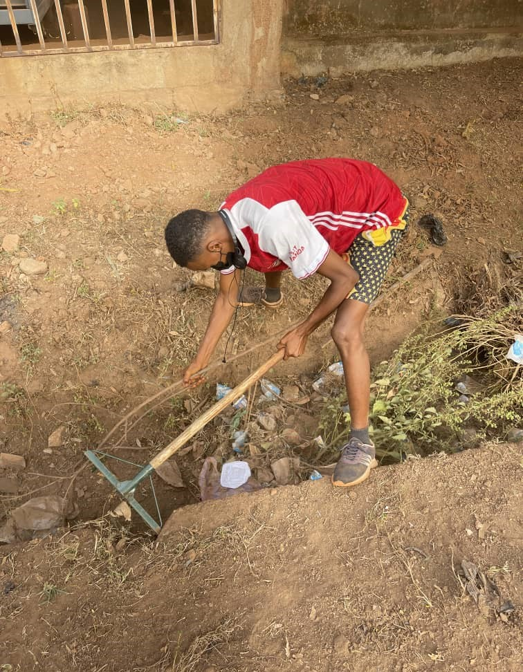
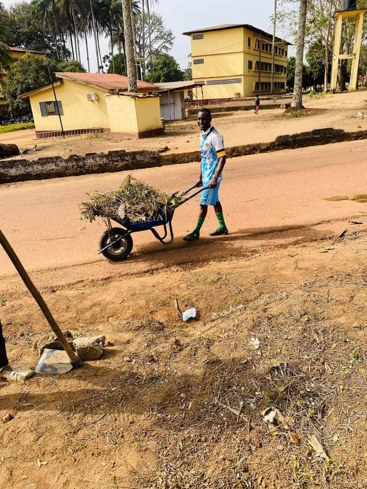

Reboisement & forêts
Plantation d'arbres, restauration des écosystèmes forestiers et lutte contre la déforestation.
En savoir plus
L'ONG VAPES mobilise les communautés de Guinée pour protéger les écosystèmes, éduquer la jeunesse et promouvoir l'égalité des genres. Rejoignez un mouvement qui transforme déjà cinq régions du pays.

Née en 2019 d'une volonté citoyenne, VAPES est une ONG apolitique, à but non lucratif, qui place les femmes, les jeunes et les communautés rurales au cœur de son action.
Nous renforçons la sensibilisation des communautés locales et agissons concrètement pour la protection de l'environnement, la préservation de la biodiversité, le développement durable et l'amélioration des conditions de vie des populations.
Chaque programme répond à un défi identifié avec les communautés. Des actions concrètes, mesurables, ancrées dans la réalité guinéenne.
Plantation d'arbres, restauration des écosystèmes forestiers et lutte contre la déforestation.
En savoir plusSensibilisation, adaptation des communautés et plaidoyer pour une transition bas-carbone.
En savoir plusProtection du littoral guinéen, plantations de mangroves et éducation des populations.
En savoir plusCollectes communautaires, tri, recyclage et campagnes de propreté urbaine.
En savoir plusAteliers scolaires, formations en gouvernance environnementale, leadership des jeunes.
En savoir plusAutonomisation économique des femmes, éducation des filles, jeunes éco-ambassadeurs.
En savoir plus
En février 2024, notre antenne de Faranah a conduit une campagne de reboisement inédite. Pendant deux semaines, femmes, jeunes et leaders communautaires se sont mobilisés pour restaurer des parcelles dégradées, former de nouveaux animateurs et poser les bases d'une gouvernance environnementale locale.
Chez VAPES, notre mission repose sur trois piliers essentiels : la Protection de l'Environnement, l'Éducation et la Promotion du Genre. Nous sommes déterminés à créer un avenir durable et inclusif pour les générations futures. — Aly Leno, Coordinateur NationalVoir toutes nos actions
Ancrée à Coyah, VAPES rayonne dans les quatre régions naturelles du pays.
Sanoyah, Km 36 · Région de Kindia
Capitale · Basse-Guinée
Fouta-Djalon · Moyenne-Guinée
Haute-Guinée · zone prioritaire
Haute-Guinée · plus grande ville
Guinée forestière
Le 7 mars, 17 membres fondateurs adoptent les statuts à Coyah. Obtention de l'agrément officiel.
Élection du premier Conseil d'Administration et mise en place des cinq antennes régionales.
Lancement des programmes de sensibilisation environnementale et des premières formations.
Grande campagne de reboisement à Faranah : sensibilisation et formation des leaders locaux.
Publication du dépliant institutionnel et renforcement de la communication digitale.
Lancement de vapes.org et ouverture de la plateforme de dons en ligne.
Parce que VAPES est une organisation à but non lucratif, 100 % de votre soutien finance nos programmes.
Institutions publiques, associations partenaires et mécènes individuels.